Return of Serve: Offensive Contact Moves¶
David Bailey
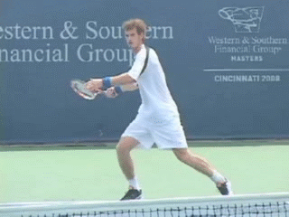
Offensive Contact Moves mean attacking the return with your feet.
Offensive Contact Moves allow players to attack the ball with their feet on the return. Players should use Offensive Contact Moves when they are trying to take charge of the point with the return. This means hitting with an aggressive mind set and transferring weight into the shot.
This article presents 5 Offensive Contact Moves for the return of serve. There are three for the forehand: the Forward Transfer, the Run Around Forward Transfer, and the Step Down. Then there are two offensive contact moves for the backhand: the Forward Transfer and the Step Down.
For each of these Contact Moves we will outline:
1. Type ball
2. Out steps
3. Hitting Stance
4. Contact Move itself
5. Balance Move
6. Recovery Steps
Backhand Transfer Preparation:
Split Step
Body Turn
Outside Foot at 45 Degrees
Open Stance
Deep Knee Bend
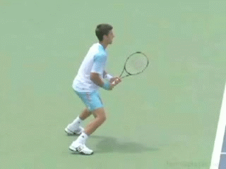
The open stance set up with the front foot at 45 degrees and a deep knee bend.
Forehand Forward Transfer
Players use the Transfer Move to attack high bouncing or kicking balls. The serve is typically bouncing up and the player is attempting to hit as aggressively as possible. They do this by transferring the weight forward during the swing.
The out step (or the first step) to initiate the movement is a pivot step or a step out, sometimes followed by small adjusting steps. (Click Here for more info on outsteps, as explained in the groundstroke articles.)
The player sets up the rear or outside foot at angle of about 45 degrees to the sideline with the foot usually flat on the court. The stance is usually fully open.
Most of the weight is on the outside foot, with the player sinking or dropping the legs so that the rear knee bends up to 90 degrees. To create this set up, use gravity to your advantage and don't try to force the bend. Think of just relaxing and letting the legs go down. The posture is upright with a vertical body alignment.
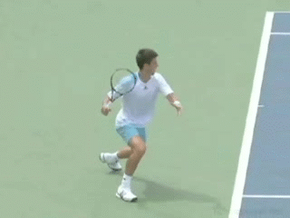
Backhand Transfer Swing:
Push Off with Outside Foot
Step Forward with Front Foot
Contact in Air
Front Foot Landing and Kick Back
Breaking Step
Crossover Recovery
As the forward swing starts, the weight transfers directly into the shot. The outside leg uncoils, propelling the player's entire body upward and forward. At the same time the player steps into the direction of the oncoming ball with the left foot.
Typically the player makes contact with one or both feet in the air. The front foot then lands on the court a split second after contact. The player usually lands well inside the baseline.
Balance Move
To balance on the Forward Transfer, the player curls the back leg with the heel of the back foot moving upwards. This helps the player stay upright, extend through the swing and finish with the elbow high and in front.
After the balance move, the rear leg comes down and then begins the recovery with a push step off the court, driving the player towards the midpoint recovery position on the baseline. The recovery steps will be side skips for a shorter recovery position, or a front crossover step as the first recovery step if a longer recovery distance is required.
If the return is hit particularly well then the Forward Transfer is also great to follow into the net as the weight is already going forward with the player already inside the baseline.
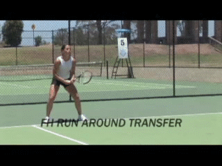
Forehand Run Around Transfer:
Split Step
Shuffle Steps Around Ball
Semi Open Stance
Push Off and Transfer Step
Contact in Air
Front Foot Landing with Kick Back
Breaking Step
Shuffle Recovery
Runaround Forehand Transfer
Players use the Run Around Forward Transfer to hit a serve that has landed in the middle of the service box or is directed at the body, usually a ball that has landed short. By moving around this ball players are able to hit an aggressive forehand return.
The out steps are shuffle steps, like those used on and inside out forehand groundstroke, as the player moves around the ball to his or her left. (Click Here for more about movment patterns on run around forehand groundstrokes.)
For the Runaround Transfer, the hitting stance is usually semi open as opposed to fully open. Again the player loads most of his weight on the outside foot, with a deep bend in the knees.
The player then transfers the weight from the outside foot to the front foot as they make contact with the ball. As with the regular transfer, the player lands on the front foot just after the hit.
The balance move is again a leg curl in which the heel of the back leg moves upwards towards the butt. This helps keep good body balance and alignment and also helps the player extend through the swing.
The recovery steps are most commonly a push step from the back leg which comes down and drives the player towards the midpoint recovery position on the baseline.
The Run around Forward Transfer move is equally great to follow into the net on a well hit return, as already the weight is going forward and you finish the shot well inside the baseline.
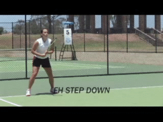
Forehand Step Down:
Step Out
Shuffle Adjusting Step
Neutral Stance
Front Foot on Court at Contact
Rear Leg Kick Back
Breaking Step
Crossover Recovery
Forehand Step Down Return
Players use the Forehand Step Down Return on a serve that has landed short in the service box, but when the bounce is a lower.
This Contact Move allows the player to step aggressively into the return, taking it early and on the rise. It has become increasingly rare in pro tennis because of the height and weight of the serve. Still it is a great return to develop and especially effective at lower levels.
On the Step Down, the pattern of the out steps depends on how far they player must move to reach the ball. The player positions behind the oncoming ball, so that he or she can transfer his weight from the back foot to front foot into the shot.
The out step options are to do a simple step out with the foot closest to the ball, then step into a neutral stance. Or you can take rhythm or sliding steps with the outside foot leading the way, followed by the step into a neutral stance. The player can also take small adjustment steps if needed.
The hitting stance for the Step Down is a neutral stance with the lead foot stepping straight down the court before contact. The step should be wide, balanced and controlled. The player will usually keep the front foot on the court during contact, but if the ball is high it may raise a few inches into the air during the forward swing.
During the swing, the player pivots the hips around the front foot. The back foot kicks back toward the back fence for balance. The kick back helps the player maintain good body alignment and time the rotation.
The kick back also improves the extension of the swing which is essential for control, direction and power. The higher the ball, the greater the kick back will tend to be.
The rear or trail leg then comes around, lands in a breaking step, then pushes off as the player starts the recovery.
The recovery steps will be side skips for a shorter recovery distance, or a front crossover step as the first recovery step if a longer distance is required. I believe that in general the front crossover step is faster, covering more distance in less time.
If the return is hit particularly well then the step down return is also great to follow into the net. As with the forward transfer, the weight is already going forward and the player is typically already inside the baseline.
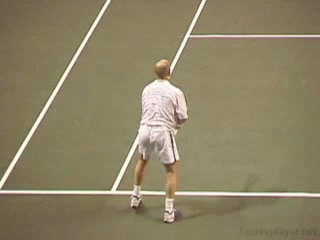
Backhand Transfer Semi Open:
Split Step
Outside Foot at 45 Degrees
Semi Open Stance
Semi Open
Transfer Step
Kick Back
Shuffle Step Recovery
Backhand Transfer Return
The Forward Transfer has become the dominant aggressive contact move on the backhand return for both one and two handers in the pro game. This is because it allows the player to move their weight forward into the shot when the ball is high.
Players can use the Backhand Transfer on a high bouncing, floating serve, and on a heavier ball as well, on either a first or second serve. The transfer allows them to launch their bodies to the height of the ball and hit the return as aggressively as possible.
As with the forehand transfer, the out step can be a pivot, or a step, and can also be followed by adjustment steps. Like the forehand, the purpose of the out steps is to load the weight on the outside foot, which is usually at an angle of about 45 degrees to the sideline.
The hitting stance is usually open but can also be semi-open. Initially though the fully open stance may not feel as natural on the backhand side, because it makes it more difficult to get the torso fully sideways.
Most of the weight is on the outside foot with a deep bend in the knee, up to as much at 90 degrees. As the swing starts, the player pushes off with the back foot and then steps forward with the front foot
This transfers the body forward and upward into the shot. Depending on the ball height, the feet can both be in the air, with the front foot landing on the court just after contact.
The balance move for the backhand Transfer Return is a leg curl with the heel of the back leg coming upwards. This createsgood body balance and helps the player extend through the swing. The finish is with the elbow high and in front and the hips and front toe ending up facing the net.
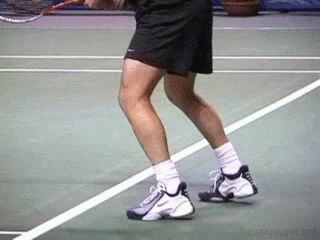
Back Transfer Open Stance:
Split Step
Outside Foot at 45 Degrees
Deeper Knee Bend
Open Stance
Contact in Air
Front Foot Landing
Kick Back
Break Step
Reverse Crossover Recovery
After the followthrough, the back foot typically swings around, lands, and brakes the player. The player then pushes off to recover. The type of recovery step depends on where the player is on the court and how far he needs to go to regain the midpoint. Note in the case of the second backhand transfer hit by Agassi that the recovery step can also cross behind the right leg as well as in front.
If the return is hit aggressively enough, the backhand transfer move is great to follow into the net as the weight is going forward and the player finishes the shot well inside the baseline.
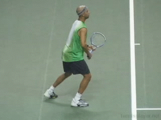
1 Hand Backhand Transfer:
Split Step
Body Turn
Outside Foot at 45 Degrees
Open Stance with Knee Bend
Transfer Step Forward and Sideways
Contact in Air
Front Foot Landing
Kick Back to Sideline
Break Step with Rear Foot
One Hand Backhand
Players also use the transfer on the one-handed backhand return. The sequence on the one-handed contact move is similar: to turn and coil the weight on the outside foot and then transfer it forward into the shot with the front foot step.
At times the front foot step can be partially sideways as well as frontwise. But the biggest difference with the one handed backhand is in the balance move. This is because the torso stays more sideways with the one-handed swing.
This means the kick back is to the side fence with the back leg basically perpendicular to the sideline. This keeps the torso from rotating around too soon and allows the swing to be more along the direction of the shot.
After the balance move the rear leg comes around to break the motion, though usually not as far around as on the two hander. From here the player is ready to move in the appropriate recovery pattern.
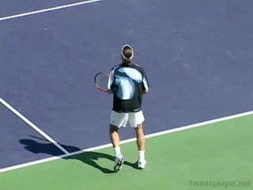
1 Hand Backhand Step Down On Rise:
Split Step
Pivot with Knee Bend
Outside Foot at 45 Degrees
Step Down into Neutral Stance
Front Foot on Court at Contact
Rear Leg Sideways Kick Back
Shuffle Step Recovery
One Handed Backhand Step Down
In pro tennis, the Step Down is relatively rare on the one-handed return, due to the height of the bounce of the serve and the reduced time to return in the modern game.
You see it however in two instances, when the player is moving in toward the net to take the ball on the rise, or moving backwards and allowing the ball In both cases this creates a lower strike zone , which in turn allows the player to step into the ball with the front foot.
But the step down is an excellent move on more balls at most other levels of the game, where the factors of contact height and reduced time interval are less extreme.
After the split step, the contact move begins with the body turn sideways. This can be initiated with a step out, a pivot, or even a reverse step away from the ball. The player then loads on the outside leg, and then takes a step directly forward into a neutral stance.
The foot stays on the court during the forward swing, but the back leg kicks into the air and back away from the player for balance, and to keep the torso sideways. As with the transfer, the back foot turns toward the sideline on the step down. After the shot is complete, the back leg comes around positioning the player to recover in either direction using a variety of possible recovery steps.
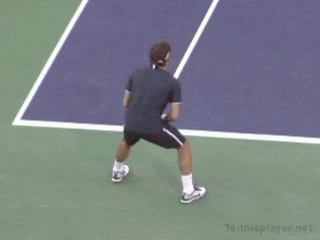
1 Hand Backhand Step Down Moves Back:
Split Step and Steps Back
Shuffle Step Body Turn
Neutral Stance
Front Foot on Court at Contact
Kick Back to Sideline
Breaking Step
Crossover Recovery
As I noted in the first article, the variety of step and movement patterns on the returns, as in all shots, is much more complex than has been previously realized. One of the main purposes of these articles is to simply help players and coaches developed an eye for recognizing them and how they apply in various situations.
The question then becomes how to apply them in playing and coaching. I have had tremendous success with players at all levels, training the specific patterns in a step by step fashion. Other players and coaches may take a different approach, believing many of these patterns develop naturally, believing that if something is working correctly, there is no reason to tamper with it and risk introducing problems where none existed before.
With this approach, however, I still believe understanding the contact moves on the returns, as well as all the other shots has tremendous value. If they understand the principles of movement at the highest levels of the game, players and coaches will have a clear framework for evaluating the effectiveness and efficiency of oncourt movement. This allows them to evaluate where improvement may be needed, and gives them a step by step methodology for causing this improvement to occur.
So that's it for the aggressive return Contact Moves! Next we'll move on to neutral and then defensive moves. Stay tuned for that!
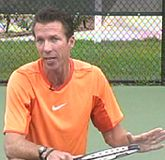
David Bailey is a native Australian who has spent 15 years studying tennis at the professional level. He has developed a new language for one of the most complex and misunderstood aspects of the game, footwork and court movement. David has worked with world class players and coaches, national tennis associations and top academies, and has presented at coaching seminars around the world. His teaching system, the Bailey Method, has become a regular part of the coaching curriculum at the Nick Bollettierri Tennis Academy, where it is personally endorsed by Nick
Visit David’s Website! Click Here!
To Contact David directly Click Here!
← Previous | Footwork Home | Next →